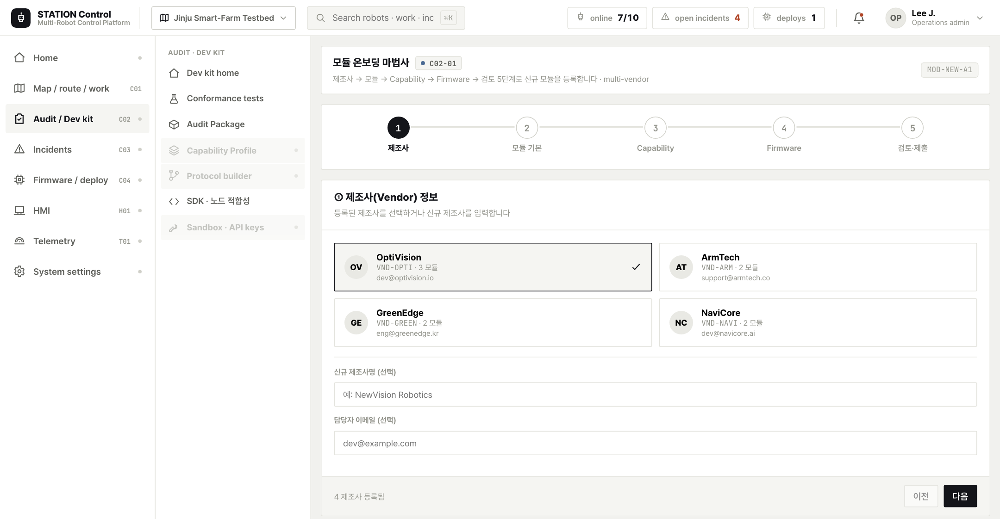
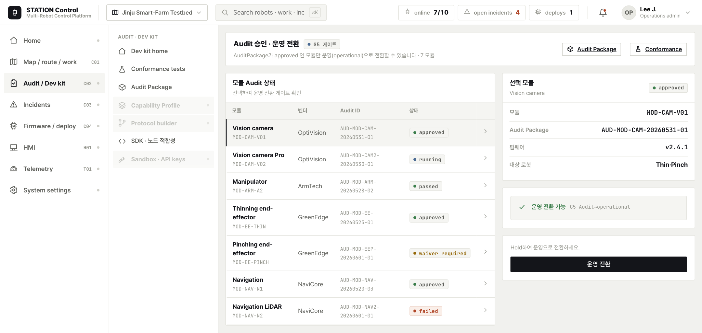

🏢
S7 · 사무실→관제실→현장
신규 기관 합류 — 무중단 통합
프로젝트 중간에 신규 기관이 신규 노드를(예: 신규 비전 카메라 MOD-CAM-V02) 들고 합류하는 상황이다 — 이런 일은 컨소시엄·다년 사업에서 매우 흔하다. 기존 노드(ORG-* 5기관)와 일일이 페어 연동하는 대신, STATION의 표준 계약에 한 번만 맞추면 기존 플릿에 무중단으로 합류한다. 작업은 사무실(등록·검증)에서 시작해 관제실(통합 대시보드 자동 등장)을 거쳐 현장(canary 투입)까지 자연스럽게 확장되며, 추가 통합 개발은 0이다.
CORE 핵심
기존 N개 모듈마다 페어 연동(O(N))이 아니라, 표준 계약 1회 등록(O(1))으로 합류 — 어느 기존 조합에 붙는지는 호환성 레지스트리가 자동 매칭한다. "이런 경우(중도 합류)가 많다"를 "손쉽게(1회 등록)"로 직접 증명하는 반복성 패턴이다.
1
신규 기관·노드 등록 — Capability/Protocol 1회 정의
신규 기관을 ORG-*로,
MOD-CAM-V02를 노드로 레지스트리에 등록하고 module_id 스파인을 발급받는다. 이 노드가 받을 명령(commands)·내보낼 텔레메트리를 Capability로, transport·topic_map·ack/timeout을 Protocol로 딱 한 번 선언한다. 기존 노드들과 개별로 맞출 필요가 없다 — 모두 동일한 표준 한 면에만 맞추면 된다.신규 모듈(MOD-CAM-V02)→Capability·Protocol(1회)→계약 레지스트리
화면: 모듈 온보딩 마법사 · 신규 기관

2
Conformance·Audit 승인
선언한 계약이 실물과 일치하는지 Conformance로 자동 검증하고, 결과를 Audit Package로 묶어 승인을 요청한다. 신규 기관라도 기존 모듈과 완전히 동일한 게이트를 통과해야 운영으로 전환된다 — 합류가 쉬워도 품질 기준은 같다.
선언 계약→Conformance·Audit→approved 모듈
화면: Audit 승인 (G5 게이트)

3
호환성 매트릭스로 기존 조합과 합치 확인
approved된 신규 노드/펌웨어가 어느 기존 로봇 조합(로봇·노드·HMI·Telemetry)에 붙는지 호환성 규칙으로 자동 판정한다. 운영자가 일일이 대조하지 않아도, 레지스트리가 합치 가능한 조합을 신호등으로 보여 준다 — 이것이 O(N²) 수작업을 없애는 지점이다.
신규 펌웨어/모듈→호환성 규칙→기존 조합 매칭
화면: 호환성 매트릭스

4
통합 대시보드에 자동 등장 — 추가 개발 0
운영 전환된 신규 모듈 로봇이 별도 통합 작업 없이 통합 관제 대시보드의 작업 계획·배정 화면에 곧바로 나타난다. 기존 다중 로봇 옆에 신규 모듈 로봇이 자연스럽게 합류하며, 작업 배정 대상으로 즉시 선택된다.
운영 전환 모듈→통합 관제→작업 계획·배정 자동 합류
화면: 통합 관제 · 작업 계획·배정

5
canary 1대 우선 투입
전 플릿 일괄 투입 대신 현장에 canary 1대를 먼저 배정해 실제 작업·통신·텔레메트리를 소수 규모로 검증한다. 이상 없음이 확인되면 동일 모듈을 점진 확대한다 — 무중단 합류를 안전망으로 마무리한다.
신규 모듈 로봇→canary 투입·검증→점진 확대
화면: 현장 canary 배정·검증

CONFIRM 신규 기관 미매핑 error code
신규 기관가 내보내는 미매핑 error code가 발견되면 Audit이 confirm/blocked로 표시한다 — 표준 event_code로 변환되지 않는 오류는 관제에서 의미 없는 코드로 새어 나갈 수 있어, 운영 전환 전에 시스템이 짚어 준다.
해결: ErrorCodeMap에
vendor_code → 표준 event_code 매핑을 추가한 뒤 Conformance를 재검증한다 → 모든 오류가 표준 코드로 정렬되면 Audit 승인·운영 전환.→ 다음 단계: S8 · 모듈 버전 업그레이드 — 호환성 게이트·canary·롤백